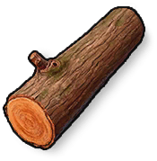

素材
アイテム · 素材木材
Wood

Wood / 素材入手方法
入手方法採集採集で入手できます
ドロップドロップで入手できます
報酬・ショップ報酬やショップで入手できます
リサイクルリサイクル元：クランスクラップリサイクラー ×150、採石場 ×150、クラン採掘場 ×150、高い木製門 ×100、クラン製材所 ×100、木造の塔 ×100、高い木製壁 ×75、マチェット ×60、ツールカップボード ×50、メイス ×50、作業台 ×50、高性能かまど ×37、木製の槍 ×25、ショットガン ×25、ソー・リッパー ×25、木製の両開きドア ×25、大型収納箱 ×25、W94 ×25、鉄の槍 ×25、ベッド ×20、クロスボウ ×15、二連式ショットガン ×15、収納箱 ×12、ガントラップ ×12、トゲ付き木製棍棒 ×10、鍵付きロック ×10、木製ドア ×10、建築用ハンマー ×10、つるはし ×10、木製の弓 ×10、斧 ×10、手製の照準器 ×7、窓 ×5、たいまつ ×5、キャンドル ×5、アドベントカレンダー ×5、石の手斧 ×5、ボルト矢 ×1、板 ×1、矢 ×1、スノーマンヘッド ×1、棒 ×1
アイテム説明
基本的な建築および燃料資源。木から採取される。
製作の説明
基本的な建築および燃料リソース。木、枯れ木、流木を伐採して採取。